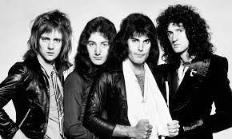

Queen
Banda británica de rock formada en 1970 en Londres

Integrantes del grupo
Brian May
Freddie Mercury
Jhon Deacon
Roger Taylor
Discografía
Grandes éxitos de Queen
Año
Disco
1975
A night at the opera
1986
A kind of magic
1989
The miracle
"A kind of magic" fue el álbum más exitoso
Sitio web oficial
www.queenonline.com